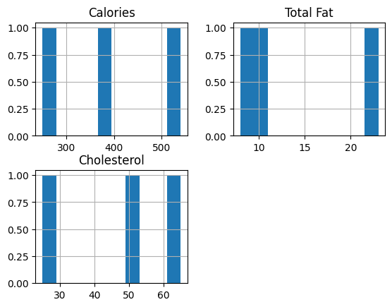

import pandas as pd
import matplotlib.pyplot as pltIntroduction
Datasets:
Dataset Descriptions:
Nutrition Facts for Starbucks Menu includes the nutrution facts for items at Starbucks. Nutrition Facts for McDonald’s Menu includes the nutrution facts for items at McDonalds.
Motivation:
To gain insight on the product naming process at Starbucks (and McDonalds, if time permits). To identify if deceitful marketing tactics are being used to convince consumers that items are healthier than they are.
Research Questions:
What general connotation do the menu items have at Starbucks (and McDonalds), and how does the connotation compare to the item’s nutritional value?
What is the frequency of high frequency sounds and low frequency sounds in product names? How does it compare to its nutritional value for the most unhealthy products?
After doing receiving inconclusive results in my intial analysis, I am considering switching my research questions to instead analyze how Starbucks and McDonalds differ in nutritional value. I am still exploring the datasets to see what other relationships I can examine.
Data Exploration
Starbucks Data
sb_drinks = pd.read_csv('https://raw.githubusercontent.com/amywzhou/DH140/main/starbucks%20data/starbucks_drinkMenu_expanded.csv')
sb_food = pd.read_csv('https://raw.githubusercontent.com/amywzhou/DH140/main/starbucks%20data/starbucks-menu-nutrition-food.csv')Food Data
sb_food.info()<class 'pandas.core.frame.DataFrame'>
RangeIndex: 113 entries, 0 to 112
Data columns (total 6 columns):
# Column Non-Null Count Dtype
--- ------ -------------- -----
0 Unnamed: 0 113 non-null object
1 Calories 113 non-null int64
2 Fat (g) 113 non-null float64
3 Carb. (g) 113 non-null int64
4 Fiber (g) 113 non-null int64
5 Protein (g) 113 non-null int64
dtypes: float64(1), int64(4), object(1)
memory usage: 5.4+ KBsb_food.columnsIndex(['Unnamed: 0', ' Calories', ' Fat (g)', ' Carb. (g)', ' Fiber (g)',
' Protein (g)'],
dtype='object')sb_food = sb_food.rename(columns={'Unnamed: 0': 'Item'})
sb_food.columnsIndex(['Item', ' Calories', ' Fat (g)', ' Carb. (g)', ' Fiber (g)',
' Protein (g)'],
dtype='object')sb_food.describe(include = 'all')| Item | Calories | Fat (g) | Carb. (g) | Fiber (g) | Protein (g) | |
|---|---|---|---|---|---|---|
| count | 113 | 113.000000 | 113.000000 | 113.000000 | 113.000000 | 113.000000 |
| unique | 113 | NaN | NaN | NaN | NaN | NaN |
| top | Chonga Bagel | NaN | NaN | NaN | NaN | NaN |
| freq | 1 | NaN | NaN | NaN | NaN | NaN |
| mean | NaN | 356.637168 | 16.353982 | 41.486726 | 2.849558 | 11.469027 |
| std | NaN | 127.710685 | 8.297397 | 15.796764 | 2.888466 | 8.463230 |
| min | NaN | 90.000000 | 0.000000 | 5.000000 | 0.000000 | 1.000000 |
| 25% | NaN | 280.000000 | 9.000000 | 31.000000 | 1.000000 | 5.000000 |
| 50% | NaN | 360.000000 | 17.000000 | 42.000000 | 2.000000 | 8.000000 |
| 75% | NaN | 450.000000 | 23.000000 | 53.000000 | 3.000000 | 19.000000 |
| max | NaN | 650.000000 | 37.000000 | 80.000000 | 21.000000 | 34.000000 |
sb_food.head()| Item | Calories | Fat (g) | Carb. (g) | Fiber (g) | Protein (g) | |
|---|---|---|---|---|---|---|
| 0 | Chonga Bagel | 300 | 5.0 | 50 | 3 | 12 |
| 1 | 8-Grain Roll | 380 | 6.0 | 70 | 7 | 10 |
| 2 | Almond Croissant | 410 | 22.0 | 45 | 3 | 10 |
| 3 | Apple Fritter | 460 | 23.0 | 56 | 2 | 7 |
| 4 | Banana Nut Bread | 420 | 22.0 | 52 | 2 | 6 |
sb_food.tail()| Item | Calories | Fat (g) | Carb. (g) | Fiber (g) | Protein (g) | |
|---|---|---|---|---|---|---|
| 108 | Justin's Chocolate Hazelnut Butter | 180 | 14.0 | 12 | 3 | 4 |
| 109 | Justin's Classic Almond Butter | 190 | 18.0 | 6 | 3 | 7 |
| 110 | Lemon Chiffon Yogurt | 340 | 13.0 | 38 | 0 | 18 |
| 111 | Organic Avocado (Spread) | 90 | 8.0 | 5 | 4 | 1 |
| 112 | Seasonal Fruit Blend | 90 | 0.0 | 24 | 4 | 1 |
sb_food.plot(y = ' Calories', kind = 'box')<AxesSubplot: >sb_food.plot(y = ' Fat (g)', kind = 'box')<AxesSubplot: >sb_food.plot(y = ' Carb. (g)', kind = 'box')<AxesSubplot: >sb_food.plot(y = ' Fiber (g)', kind = 'box')<AxesSubplot: >sb_food.plot(y = ' Protein (g)', kind = 'box')<AxesSubplot: >Drinks Data
sb_drinks.info()<class 'pandas.core.frame.DataFrame'>
RangeIndex: 242 entries, 0 to 241
Data columns (total 18 columns):
# Column Non-Null Count Dtype
--- ------ -------------- -----
0 Beverage_category 242 non-null object
1 Beverage 242 non-null object
2 Beverage_prep 242 non-null object
3 Calories 242 non-null int64
4 Total Fat (g) 242 non-null object
5 Trans Fat (g) 242 non-null float64
6 Saturated Fat (g) 242 non-null float64
7 Sodium (mg) 242 non-null int64
8 Total Carbohydrates (g) 242 non-null int64
9 Cholesterol (mg) 242 non-null int64
10 Dietary Fibre (g) 242 non-null int64
11 Sugars (g) 242 non-null int64
12 Protein (g) 242 non-null float64
13 Vitamin A (% DV) 242 non-null object
14 Vitamin C (% DV) 242 non-null object
15 Calcium (% DV) 242 non-null object
16 Iron (% DV) 242 non-null object
17 Caffeine (mg) 241 non-null object
dtypes: float64(3), int64(6), object(9)
memory usage: 34.2+ KBAnalysis
Connotation/Perception of Each Food Name and Correlation to Nutrition
import nltk
from nltk.sentiment import vader
nltk.download('vader_lexicon')
nltk.download('stopwords')
sia = vader.SentimentIntensityAnalyzer()
nltk.download('opinion_lexicon')
from nltk.corpus import opinion_lexicon
from nltk.tokenize import sent_tokenize, word_tokenize[nltk_data] Downloading package vader_lexicon to
[nltk_data] /home/jovyan/nltk_data...
[nltk_data] Package vader_lexicon is already up-to-date!
[nltk_data] Downloading package stopwords to /home/jovyan/nltk_data...
[nltk_data] Package stopwords is already up-to-date!
[nltk_data] Downloading package opinion_lexicon to
[nltk_data] /home/jovyan/nltk_data...
[nltk_data] Package opinion_lexicon is already up-to-date!def getSentiment(item):
return sia.polarity_scores(item)['compound']positive_words = set(opinion_lexicon.positive())
negative_words = set(opinion_lexicon.negative())
def getOpinionScore(item):
words = nltk.word_tokenize(item.lower())
num_positive = sum(1 for word in words if word in positive_words)
num_negative = sum(1 for word in words if word in negative_words)
opinion_score = num_positive - num_negative
return opinion_scoreStarbucks Food Items
sb_food['Sentiment'] = sb_food['Item'].apply(getSentiment)
sb_food['Sentiment'].describe()count 113.000000
mean 0.019035
std 0.087896
min 0.000000
25% 0.000000
50% 0.000000
75% 0.000000
max 0.510600
Name: Sentiment, dtype: float64sb_food['Opinion'] = sb_food['Item'].apply(getOpinionScore)
sb_food['Opinion'].describe()count 113.000000
mean 0.035398
std 0.351761
min -1.000000
25% 0.000000
50% 0.000000
75% 0.000000
max 1.000000
Name: Opinion, dtype: float64sb_food.loc[sb_food['Opinion']>0, [' Calories', ' Fat (g)', ' Carb. (g)']].hist()array([[<AxesSubplot: title={'center': ' Calories'}>,
<AxesSubplot: title={'center': ' Fat (g)'}>],
[<AxesSubplot: title={'center': ' Carb. (g)'}>, <AxesSubplot: >]],
dtype=object)Starbucks Drinks Items
sb_drinks['Sentiment'] = sb_drinks['Beverage'].apply(getSentiment)
sb_drinks['Sentiment'].describe()count 242.000000
mean -0.001914
std 0.012029
min -0.077200
25% 0.000000
50% 0.000000
75% 0.000000
max 0.000000
Name: Sentiment, dtype: float64sb_drinks['Opinion'] = sb_drinks['Beverage'].apply(getOpinionScore)
sb_drinks['Opinion'].describe()count 242.000000
mean 0.107438
std 0.359844
min -1.000000
25% 0.000000
50% 0.000000
75% 0.000000
max 1.000000
Name: Opinion, dtype: float64sb_drinks.loc[sb_drinks['Opinion']>0, ['Calories']].hist(bins = 10)array([[<AxesSubplot: title={'center': 'Calories'}>]], dtype=object)sb_drinks.loc[sb_drinks['Opinion']<0, ['Calories']].hist()array([[<AxesSubplot: title={'center': 'Calories'}>]], dtype=object)Limitations of Results
- Discuss why SIA and Opinion Lexicon didn’t work
- Words were neutral, and not enough context to create a sentiment
- Discuss limited analysis of available data
- Not enough data points to draw conclusion
- Unequal amounts of “positive” versus “negative food items
- Discuss future studies
- Make a set of positive/negative list specifically from the food health perspective
Frequency of Sounds (Letters) in Product Names and Correlation to Nutrition
def letterFrequency(item):
frequencyScore = 0
for letter in ['f', 's', 'i', 'e']:
if letter in item.lower():
frequencyScore = frequencyScore + 1
for letter in ['b', 'd', 'g', 'o', 'u']:
if letter in item.lower():
frequencyScore = frequencyScore - 1
if frequencyScore > 0 :
phonemicSounds = 'high'
elif frequencyScore < 0:
phonemicSounds = 'low'
else:
phonemicSounds = 'neutral'
return phonemicSoundsStarbucks Food
sb_food['phonemicFrequency'] = sb_food['Item'].apply(letterFrequency)0 low
1 low
2 neutral
3 high
4 low
...
108 neutral
109 low
110 neutral
111 neutral
112 neutral
Name: phonemicFrequency, Length: 113, dtype: objectsb_food.loc[sb_food['phonemicFrequency']=='high', [' Calories', ' Fat (g)', ' Carb. (g)']].hist()array([[<AxesSubplot: title={'center': ' Calories'}>,
<AxesSubplot: title={'center': ' Fat (g)'}>],
[<AxesSubplot: title={'center': ' Carb. (g)'}>, <AxesSubplot: >]],
dtype=object)sb_food.loc[sb_food['phonemicFrequency']=='low', [' Calories', ' Fat (g)', ' Carb. (g)']].hist()array([[<AxesSubplot: title={'center': ' Calories'}>,
<AxesSubplot: title={'center': ' Fat (g)'}>],
[<AxesSubplot: title={'center': ' Carb. (g)'}>, <AxesSubplot: >]],
dtype=object)sb_food.loc[sb_food['phonemicFrequency']=='neutral', [' Calories', ' Fat (g)', ' Carb. (g)']].hist()array([[<AxesSubplot: title={'center': ' Calories'}>,
<AxesSubplot: title={'center': ' Fat (g)'}>],
[<AxesSubplot: title={'center': ' Carb. (g)'}>, <AxesSubplot: >]],
dtype=object)sb_drinks['phonemicFrequency'] = sb_drinks['Beverage'].apply(letterFrequency)sb_drinks.loc[sb_drinks['phonemicFrequency']=='high', ['Calories']].hist()array([[<AxesSubplot: title={'center': 'Calories'}>]], dtype=object)sb_drinks.loc[sb_drinks['phonemicFrequency']=='low', ['Calories']].hist()array([[<AxesSubplot: title={'center': 'Calories'}>]], dtype=object)Goals for this section
- plot histograms for high, neutral, and low phonemic Frequency on the same graph
- plot for additional categories beyond calories
- explor different plot types
- MAYBE conduct a network analysis to predict what the next item name will be?
I am still exploring the data and and looking for more trends and considering altering my research question to compare Starbucks and McDonalds Nutrition since most of my results look inconclusive
McDonalds Data (if enough time)
mcd_menu = pd.read_csv('https://raw.githubusercontent.com/amywzhou/DH140/main/mcdonalds%20data/menu.csv')
mcd_menu.info()<class 'pandas.core.frame.DataFrame'>
RangeIndex: 260 entries, 0 to 259
Data columns (total 24 columns):
# Column Non-Null Count Dtype
--- ------ -------------- -----
0 Category 260 non-null object
1 Item 260 non-null object
2 Serving Size 260 non-null object
3 Calories 260 non-null int64
4 Calories from Fat 260 non-null int64
5 Total Fat 260 non-null float64
6 Total Fat (% Daily Value) 260 non-null int64
7 Saturated Fat 260 non-null float64
8 Saturated Fat (% Daily Value) 260 non-null int64
9 Trans Fat 260 non-null float64
10 Cholesterol 260 non-null int64
11 Cholesterol (% Daily Value) 260 non-null int64
12 Sodium 260 non-null int64
13 Sodium (% Daily Value) 260 non-null int64
14 Carbohydrates 260 non-null int64
15 Carbohydrates (% Daily Value) 260 non-null int64
16 Dietary Fiber 260 non-null int64
17 Dietary Fiber (% Daily Value) 260 non-null int64
18 Sugars 260 non-null int64
19 Protein 260 non-null int64
20 Vitamin A (% Daily Value) 260 non-null int64
21 Vitamin C (% Daily Value) 260 non-null int64
22 Calcium (% Daily Value) 260 non-null int64
23 Iron (% Daily Value) 260 non-null int64
dtypes: float64(3), int64(18), object(3)
memory usage: 48.9+ KBunique_categories = mcd_menu['Category'].unique()
print(unique_categories)['Breakfast' 'Beef & Pork' 'Chicken & Fish' 'Salads' 'Snacks & Sides'
'Desserts' 'Beverages' 'Coffee & Tea' 'Smoothies & Shakes']mcd_drinks = pd.concat([mcd_menu[mcd_menu['Category']== 'Beverages'], mcd_menu[mcd_menu['Category']== 'Coffee & Tea'], mcd_menu[mcd_menu['Category']== 'Smoothies & Shakes']])
mcd_food = pd.concat([mcd_menu[mcd_menu['Category']== 'Breakfast'], mcd_menu[mcd_menu['Category']== 'Beef & Pork'], mcd_menu[mcd_menu['Category']== 'Chicken & Fish'],mcd_menu[mcd_menu['Category']== 'Salads'],mcd_menu[mcd_menu['Category']== 'Snacks & Sides']])mcd_food['Sentiment'] = mcd_food['Item'].apply(getSentiment)
mcd_food['Sentiment'].describe()count 103.000000
mean 0.014728
std 0.086202
min 0.000000
25% 0.000000
50% 0.000000
75% 0.000000
max 0.599400
Name: Sentiment, dtype: float64mcd_food.loc[mcd_food['Sentiment']>0, ['Calories', 'Total Fat', 'Cholesterol']].hist()array([[<AxesSubplot: title={'center': 'Calories'}>,
<AxesSubplot: title={'center': 'Total Fat'}>],
[<AxesSubplot: title={'center': 'Cholesterol'}>, <AxesSubplot: >]],
dtype=object)